DSI Studio: a Reusable Data Analysis and Modelling App (R Shiny)
A point-and-click R Shiny app that takes any CSV through a complete modelling workflow: exploratory analysis, missing-data and outlier handling, preprocessing, and comparing 30+ regression models, with every step reproducible and every stage’s data downloadable.
Built for the University of Canterbury course Data Science in Industry (DATA423, grade A+). The framework grew across three assignments, each adding a stage of the workflow: exploratory analysis (A1), missing data and outliers (A2), and model selection (A3).
▶ Try the live app (free hosting: the first load after a quiet spell takes about a minute)
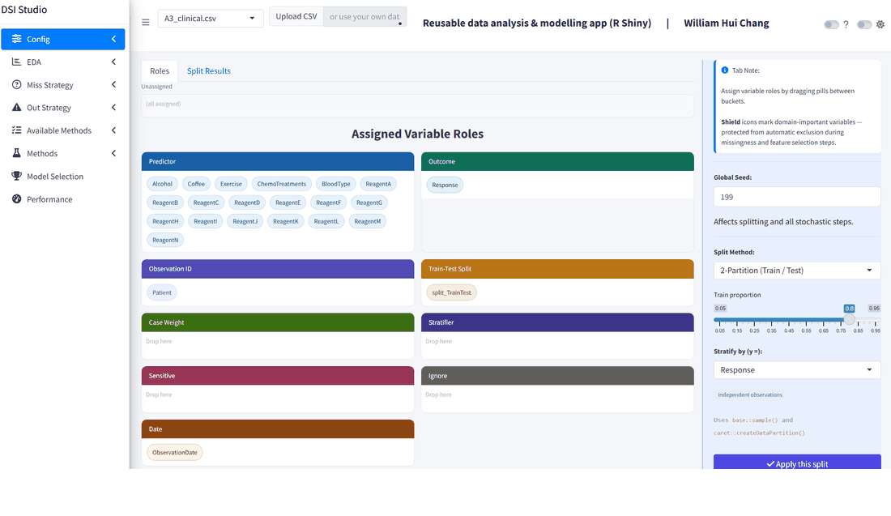
A walkthrough of 15 views, from data roles through EDA, missing data and outliers to model selection. Full-size screenshots with captions are below.
📸 All 15 screenshots (click to expand)
1. Config: drag-and-drop column roles and a seeded, stratified train/test split (A3)
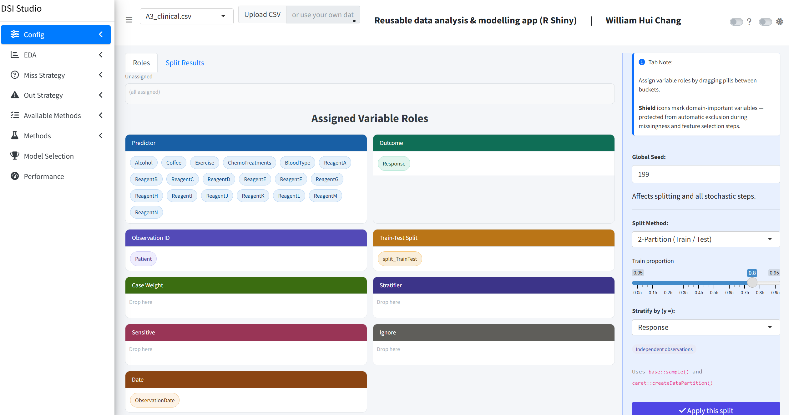
2. EDA: word cloud of all values, exposing disguised missing codes such as -99 and -- (A2)
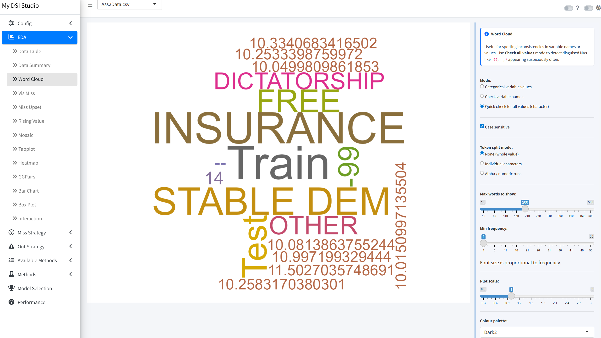
-99 and -- (A2)3. EDA: missingness map grouped by healthcare basis, showing missingness differs by group (A2)
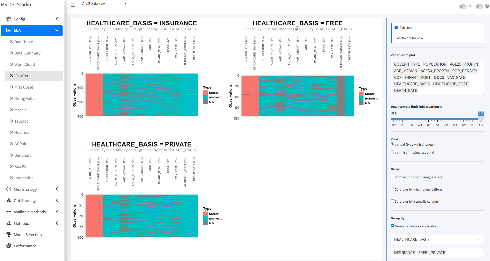
4. EDA: variable types and missingness with rows sorted by population density (A2)
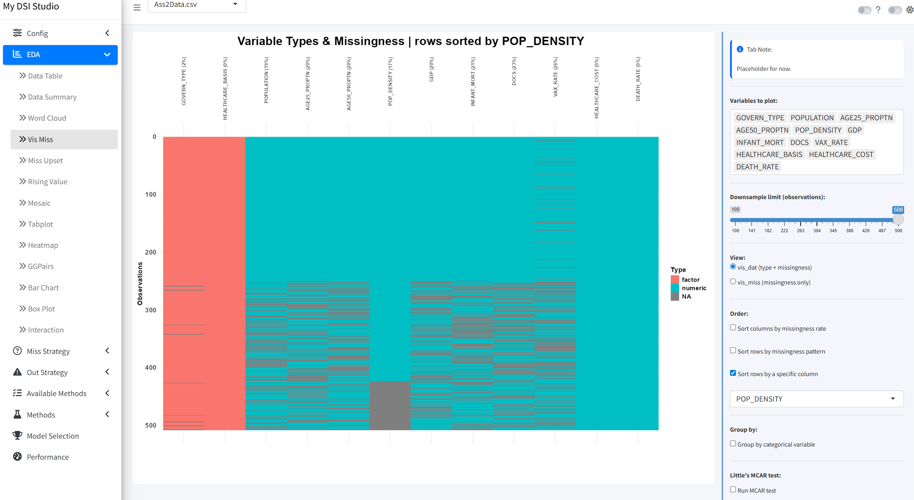
5. EDA: rising-value graph to check each numeric variable for gaps and odd values (A3)
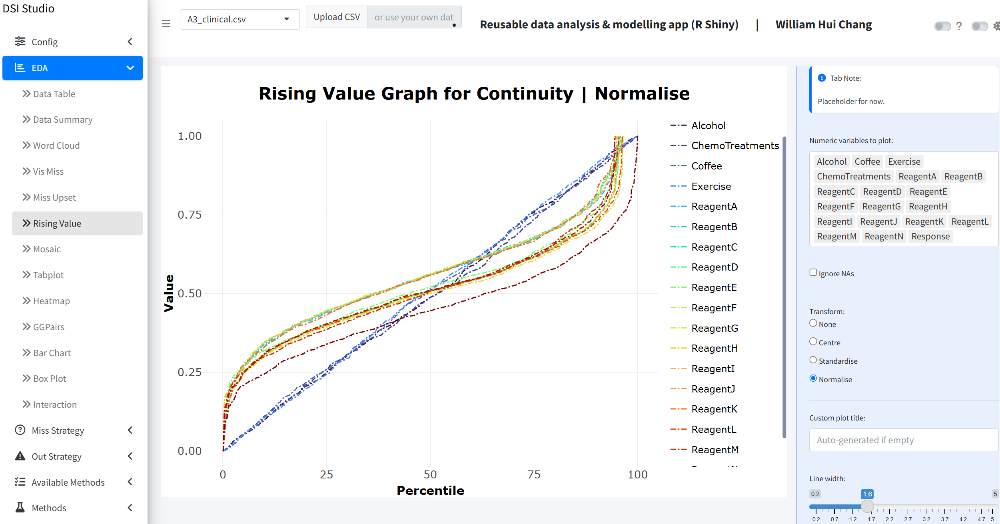
6. EDA: pairs plot coloured by train/test split, checking the split is balanced (A3)
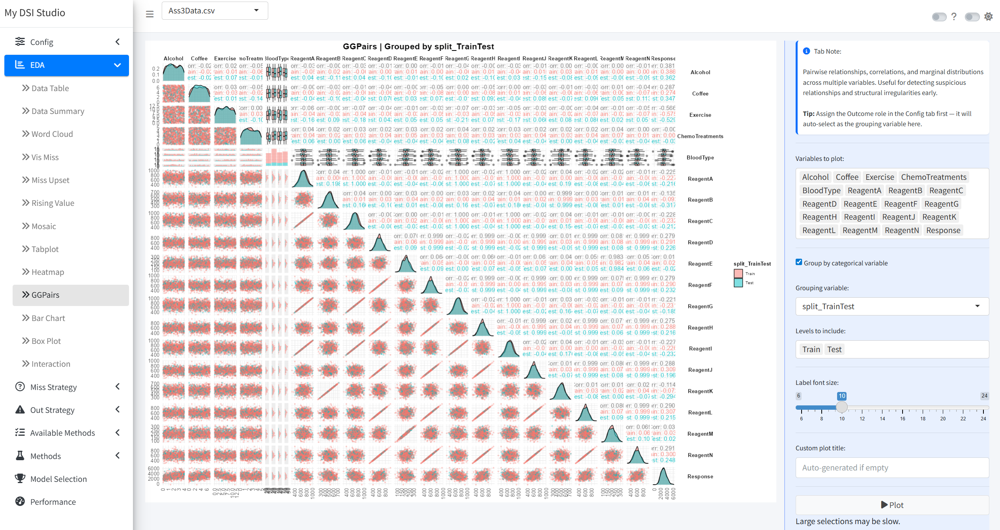
7. EDA: standardised boxplots with outliers labelled by patient ID (A3)
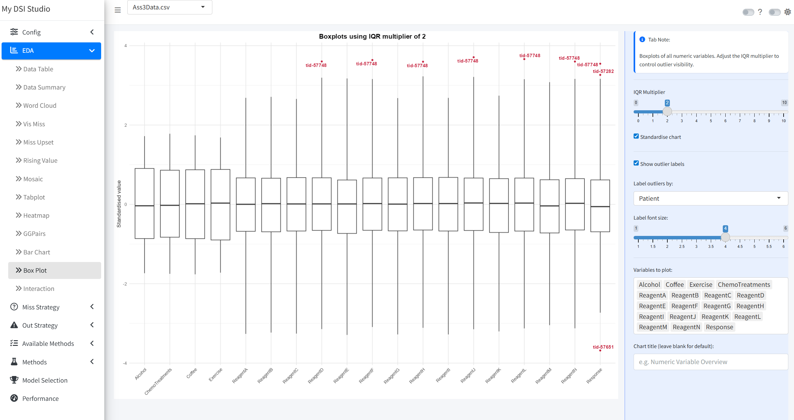
8. Missing data: thresholds for dropping variables and observations with too many missing values (A2)
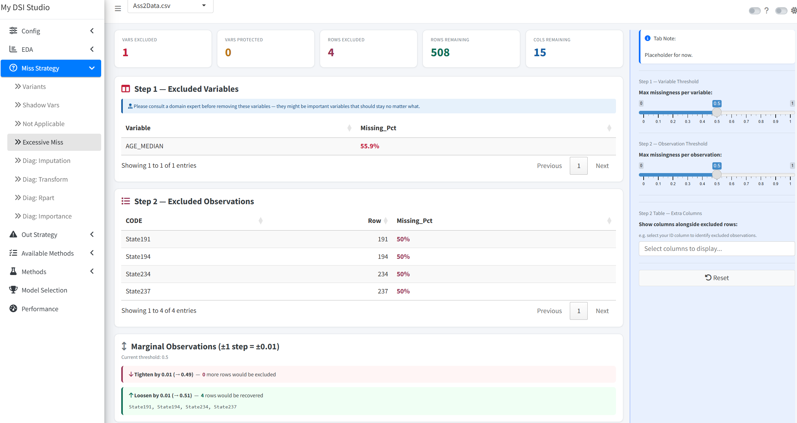
9. Missing data: comparing KNN and bagged-tree imputation against the observed distributions (A3)
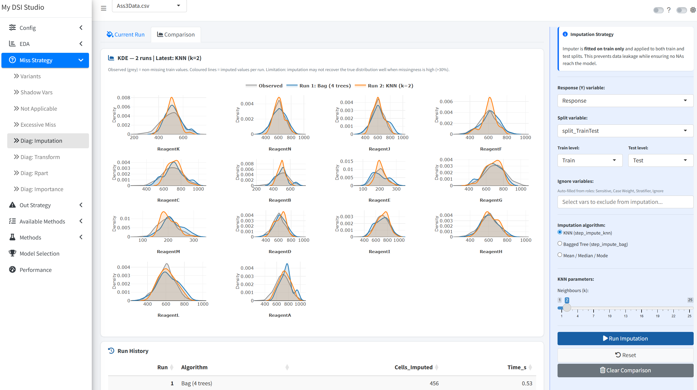
10. Missing data: a decision tree predicting how many values an observation is missing, a check for non-random missingness (A2)
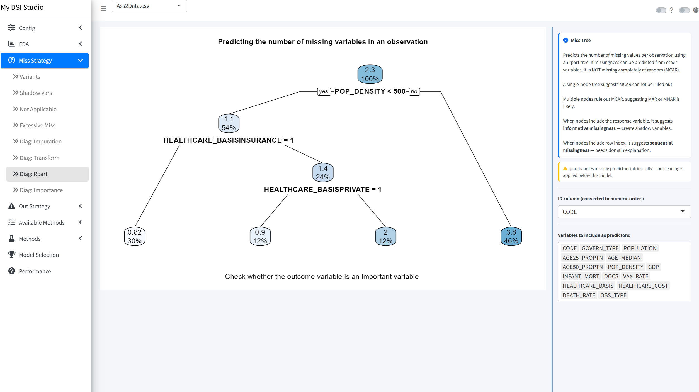
11. Outliers: consensus across six detection methods; the tallest bars are flagged by the most methods (A3)
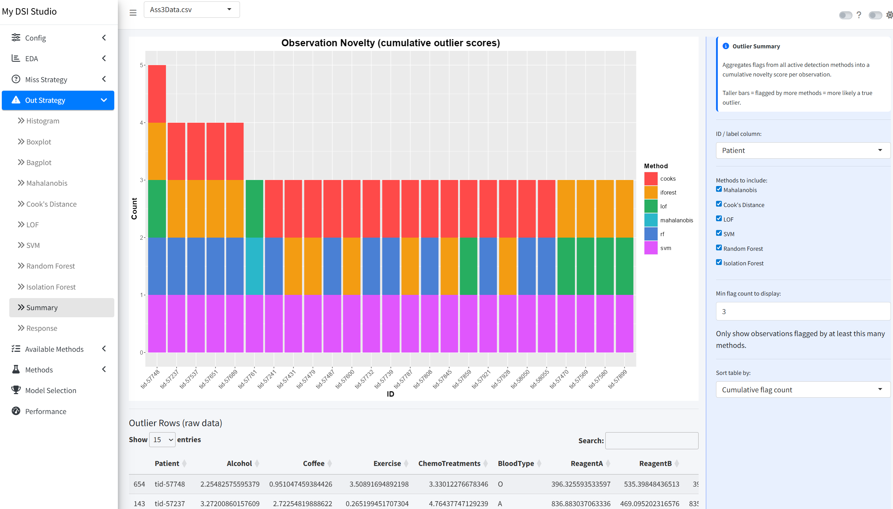
12. Available methods: map of 239 caret models, grouped by model family
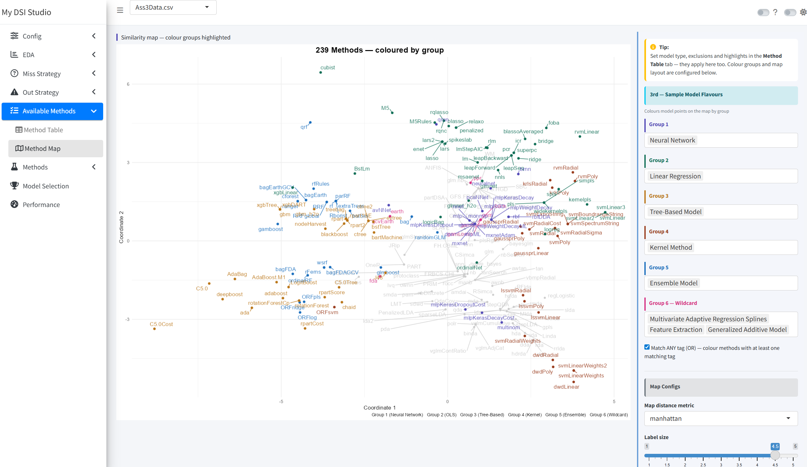
13. Methods: tuning an SVM (polynomial kernel), RMSE by cost and degree
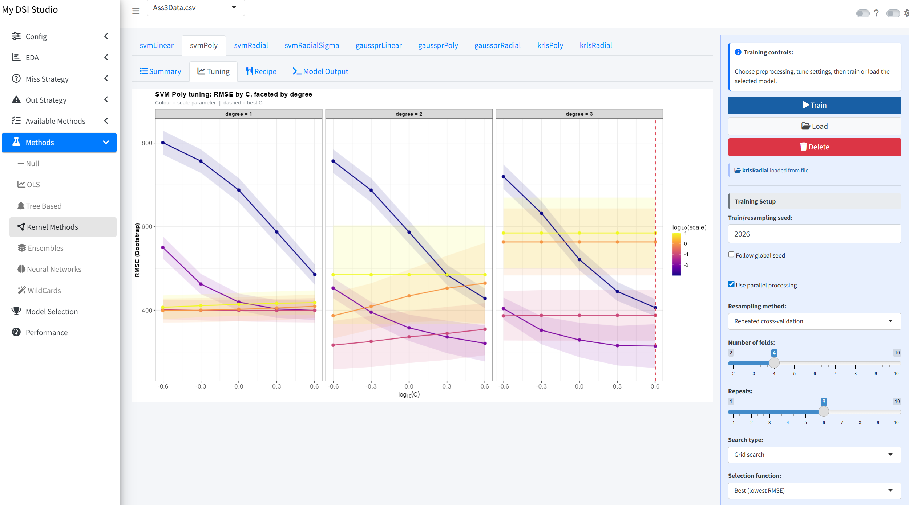
14. Model selection: cross-validated MAE, RMSE and R² for ~30 trained models
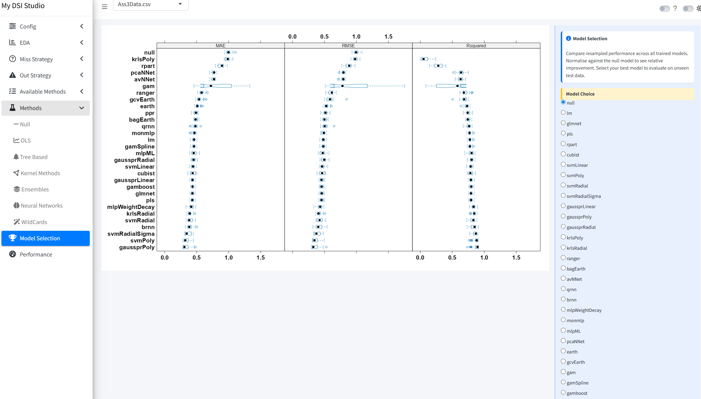
15. Performance: the chosen model (glmnet) on unseen test data, with R² 0.77 and residual checks
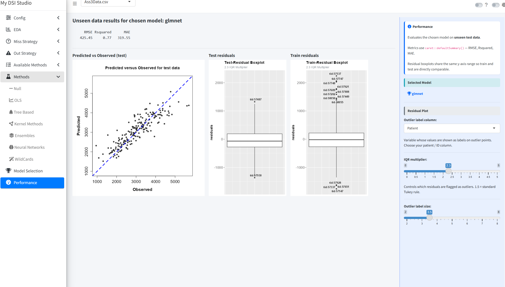
What it does
The sidebar follows the order of a real analysis. Each stage passes its cleaned data to the next.
| Stage | What you can do |
|---|---|
| Config | Assign column roles (outcome, ID, date, train/test split, weights, stratifier, sensitive, ignore); split the data 6 ways (train/test, train/validation/test, stratified bootstrap, leave-group-out, time series, diversity sampling) with fixed seeds; download the data at any stage |
| EDA (13 views) | Data table, summary, word cloud, missingness map and UpSet plot, rising-value plot, mosaic, tabplot, correlation heatmap, pairs plot, bar and box plots, interaction plots |
| Missing data (8 tools) | Detect disguised missing codes (e.g. -99, --), add shadow variables, treat “not applicable” values, drop excessively missing rows/columns, compare imputation methods (KNN, bagged trees, median/mode), check transformations, and model why data is missing (rpart tree, variable importance) |
| Outliers (11 tools) | Histogram, boxplot, bagplot, Mahalanobis distance, Cook’s distance, local outlier factor, one-class SVM, random forest, isolation forest, a consensus summary across methods, and outcome (response) outliers |
| Models | Browse caret’s model catalogue as a table or map, then train models from 7 families (null baseline, linear/regularised, trees, kernel methods, ensembles, neural networks, wildcards such as MARS and M5). Each model gets its own chain of up to 31 preprocessing steps (imputation, transforms, PCA/PLS, dummy coding, interactions and more) |
| Selection & performance | Compare cross-validated results across all trained models, pick one, and check it on the held-out test set |
Three assignments, one app
Each assignment came with its own dataset (synthetic data provided for the course), and all three are bundled with their roles pre-set. Pick one from the dropdown in the header.
| Assignment | Dataset | Focus | Where to look |
|---|---|---|---|
| A1: Exploratory analysis | A1_manufacturing.csv: a manufacturing process with 30 sensor readings and categorical process variables |
Use EDA graphics to reveal data problems before any modelling: missing-value patterns, suspicious or disguised values, outliers and relationships between variables | EDA tabs |
| A2: Missing data and outliers | A2_public_health.csv: death rates with health and economic indicators; about 15% of values missing |
Handle missingness and outliers properly: find disguised missing codes, treat “not applicable” values, drop excessively missing data, compare imputation methods, and flag outliers with several methods | Miss Strategy and Out Strategy |
| A3: Model selection | A3_clinical.csv (opens by default): patient response from reagent measurements and lifestyle factors |
Build a preprocessing pipeline per model, train and compare many model types, choose one, and test it on unseen data | Methods, Model Selection, Performance |
You can also use Upload CSV in the header to load your own file (up to 10 MB).
Quick look at A3: open Methods → OLS, pick glmnet and click Load to use a pre-trained model instead of training one, then open Model Selection and Performance. A3 is split into train and test sets automatically, and A2 uses its own OBS_TYPE column; for A1 or your own data, create the split in Config → Data Roles and stratify it by the outcome.
How it’s built
- Modular: 45 Shiny modules, one per view or step, found and loaded automatically from the
modules/folder. Adding a view means adding one file. - Chained pipeline: raw data → missing-value variants → shadow variables → “not applicable” handling → excessive missingness → response outliers → imputation → transformation. Each stage is a reactive step, so changing an early choice updates everything downstream.
- Config-driven: dataset-specific defaults (roles, seeds, preprocessing per model) live in
global.R, so the same app serves any dataset. - Reproducible: fixed seeds for splitting and model training; trained models are saved and can be reloaded.
Next steps
- Classification: extend the app from regression to classification, so it can also model categorical outcomes (e.g. yes/no, or several classes). This means classification models and preprocessing defaults in the Methods tabs, classification metrics (accuracy, Kappa, ROC/AUC, confusion matrices) in Model Selection and Performance, and class balance checks in the train/test split.
Run it locally
Requires R (4.3+) and the packages loaded in global.R and modules/method/mod_meth_shared.R.
shiny::runApp(".") # from this folder, or open ui.R in RStudio and click Run AppTo deploy your own copy to shinyapps.io, see deploy.R.
Repository contents
global.R, ui.R, server.R app entry points and configuration
modules/ config, eda, miss, out and method modules
data/ the three bundled datasets
deploy.R one-command deployment to shinyapps.io
screenshots/ README screenshots and slideshow